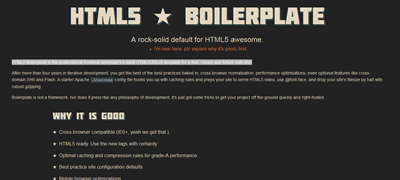
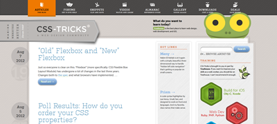
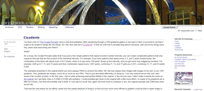
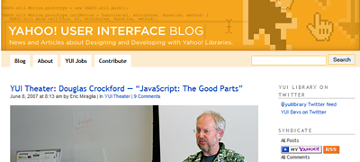
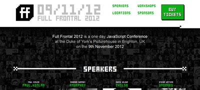

Favourites
A selection of the sites I like to use to learn and keep up to date with web development.
- When starting an HTML5 website from scratch, I use the HTML5 Boilerplate. As they say on the website "HTML5 Boilerplate is the professional frontend developers's base HTML/CSS/JS template for a fast, robust and future-safe site."
- 
- Chris Coyier's CSS-Tricks blog /website looks great and is packed with useful information about CSS, JavaScript and other web related topics. There are video screencasts on Designing for WordPress and plenty of downloads.
- 
- I attended Eric Meyer's workshop in London when he came over in 2009. A great advocate for CSS and Web standards, his reset stylesheet introduced around 2007 was a big step forward in reducing cross browser inconsistencies.
- 
- Douglas Crockford demonstrated how to write good JavaScript with his book "JavaScript: The Good Parts". His video presentation of his ideas can be downloaded from here. This is just an example of the many talks available in the YUI Theater
- 
- Remy Sharp @rem organises the Full Frontal JavaScript conference in November every year. I have been to every conference since 2011 and attended a couple of the workshops too.
- 
And acknowledgement to tangled in design for a great tutorial on forms with html5 and css3 and stackoverflow which has reliable answers for many problems.
There are many other good frontend developer websites I've had to leave out.